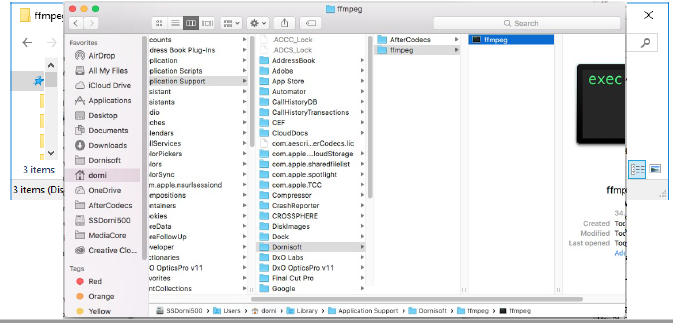

AfterCodecs is a new native exporter for Adobe After Effects, Premiere Pro and Media Encoder CC 2015+ on Windows 7+ and Mac OS X 10.10+, bringing you ProRes, H264, H265 & Hap codecs for excellent quality and lightweight videos.
You can step 1 and 3 on Windows with the given setup and skip step 1 on OSX with the setup package.
setup package.
You can also skip the two first steps by using the aescripts + aeplugins manager application.


Please not that there's always a minimal version of ffmpeg / ffkroma needed to run AfterCodecs ! If you see a red message, please update.
AfterCodecs sends your data into ffmpeg in order to encode it. The logging feature enables power users to read AfterCodecs' and ffmpeg's output logs. On AE : If you have both video and audio, temporary files will be written (suffixed .video.mov and .audio.wav) and there is an additional muxing step at the end of the render (a progressbar will pop up on Windows). Please bear in mind that After Effects will prevent you from overwriting the final output file, but not temporary ones. You can even stop the render at any time and the rendered files will be fine, storing what has been currently rendered. On PPro / AME : If you have audio, a temporary WAV file will be written (suffixed .audio.wav). Please bear in mind that AfterCodecs will not prevent you from overwriting temporary files.
Select the EXT extension to save up time if you are doing huge renders (multi gigabytes) or if you want to remove the "File already exists. Do you want to replace it." confirmation popup. This option is not compatible with having post render actions such as automatic uploading to the web. The reason this option exists is that on huge files, PP and ME will spend multiple minutes to parse the file (make the test to see if it's an issue for you !)
Don't forget to press the "Match Source" button in order to conform Resolution, Framerate and Pixel Aspect Ratio to the source (the button will automatically tick the checkboxes at the right). If you record any preset also press the Match Source button before so that you are sure you are not saving thoses parameters in the preset.
For any issue please contact us on aescripts + aeplugins by opening up a ticket and provide a logging file and precising AE or Ppr / AME http://aescripts.com/contact/? direct=1&SKU=DSTAC-SUL .